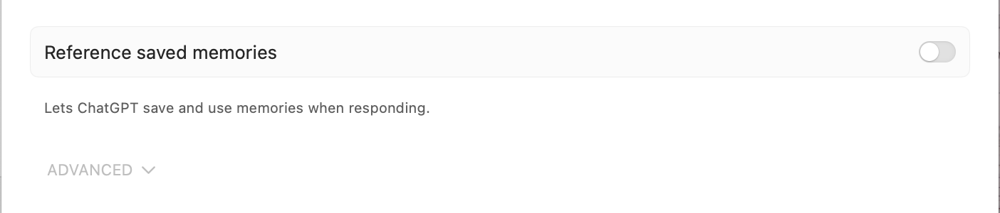

ChatGPT 在对话的过程中有一个特点，就是会倾向于说你喜欢听的话，以及赞同你说的话。
当你想要询问 ChatGPT 一些建议的时候，比如接下来做什么 side project，或者对于某种项目方向的看法，ChatGPT 会根据你的技术栈来推荐，或者说基于你最近提到的 XXX，推荐你做 YYY。
这是非常不好的一种现象，这样长期下去，你将无法从 ChatGPT 那里获得客观的建议，你自己的技术栈、信息来源，也都会被局限在你熟悉的范围内。
所以一定要关闭 ChatGPT 的 memory 功能，以避免信息茧房、判断茧房。
